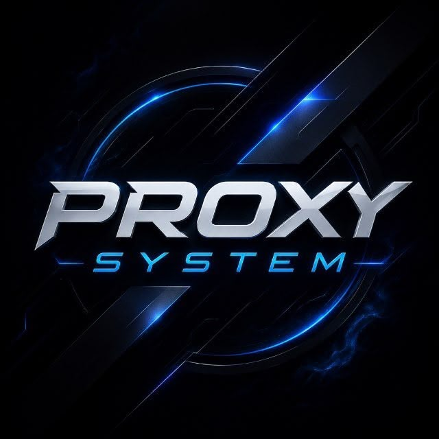

RELEASE FILE
Instale o seu app no dispositivo certo.
Uma página simples para instalar o PROXY SYSTEM pelo Safari, com a assinatura e a autorização do aplicativo preservadas.
Manifesto OTA ativo · versão pública 1.0

PROXY SYSTEM · OFFICIAL BUILDPROXY SYSTEM
Distribuição autorizada para iPhone e iPad.
Abra esta página pelo Safari do iPhone ou iPad.
MANIFESTO OTA
https://nayarafogaca694-ux.github.io/ios-ipa-installer/manifest.plistCOMO FUNCIONA
Um caminho claro para a instalação.
O iOS abre o manifesto pelo Safari e consulta a IPA publicada na Release. O aparelho precisa estar autorizado pelo perfil de distribuição.
01
Abra no Safari
Use o navegador do iPhone ou iPad; o esquema de instalação é próprio do iOS.
02
Toque em instalar
O botão abre o manifesto OTA e direciona o iOS para a versão publicada.
03
Confirme a autorização
A instalação depende da assinatura válida e do dispositivo previsto no provisioning profile.